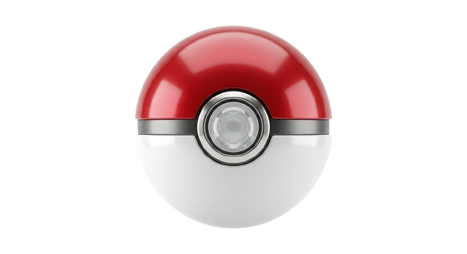

ダメ計
構築を攻撃側にも受け側にも置ける
ホーム
ダメ計
-
自分の構築
構築を編集
構築が攻撃
構築が受け
攻撃側
防御側
攻撃側
使う技
技を選択
防御側
場・条件
天候
なし
晴れ
雨
砂
雪
場
なし
エレキ
グラス
サイコ
ミスト
異常
なし
やけど
まひ
どく
もうどく
まきびし
0
1
2
3
急所
リフレク
光の壁
ベール
ステロ
やどりぎ
やけどD
どくD
重力
てだすけ
後攻(がんせき)
選択
閉じる